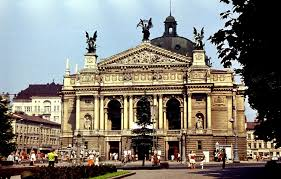

У 1795 році у Львові було відкрито перший в Україні професійний театр. У 1842 році відкрито Театр Скарбека, тоді — третій за розмірами в Європі; у 1900 році з'явилася Львівська опера — один з найгарніших театрів країни, зображений на двадцятигривневій купюрі.
на головну